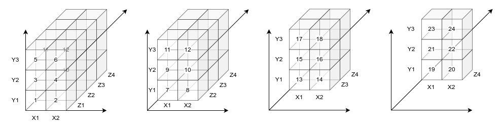

Структуры данных и работа с ними
младший научный сотрудник
НИИ антимикробной химиотерапии
ФГБОУ ВО СГМУ Минздрава России
🙋♂️ Проверка связи
Если слышно/видно поставьте в чат плюс +
🎯 Цели занятия
- Узнать, как можно организовывать данные в R
- Научиться работать с основными структурами данных
Структуры данных

1️⃣ Векторы
Вектор
Вектор (vector) – набор значений одного типа.
Можно также сказать, что это одномерные массивы данных, которые могут содержать числовые, текстовые или логические значения.
Создать вектор можно с помощью функции c().
Способы создания вектора
[1] "A" "A" "A" "A" "A" "A" "A" "A" "A" "A"[1] 1 2 3 1 2 3 1 2 3 [1] 1 1 1 1 2 2 2 2 3 3 3 3[1] 1 2 3 1 2 3 1Операции с векторами
Неявное и явное приведение типов
При работе с векторами разных типов может применяться неявное приведение типов (implicit coercion), чтобы результат был одного типа.
Это может приводить к неожиданным результатам.
Иерархия приведения типов
NULL < raw < logical < integer < double < complex < character < list < expression
Индексирование
Можно обратиться непосредственно к конкретному элементу вектора по его порядковому номеру (индексу).
Индексирование в R начинается с 1
Можно использовать векторы для индексирования, чтобы выбирать сразу несколько элементов.
Использование отрицательного значения индекса позволяет исключать элементы
Логические векторы
Для поиска значений, удовлетворяющих условию удобно использовать логические векторы со значениями TRUE или FALSE.

Приемы работы с логическими векторами
Подсчет количества элементов с помощью sum()
Проверка на наличие элементов с помощью all() и any().
Получение позиций элементов вектора, удовлетворяющих условию с which().
2️⃣ Матрицы
Матрица
Матрица (matrix) – это двумерный массив данных, в котором каждый элемент имеет одинаковый тип (числовой, текстовый или логический).
Обратиться к элементу матрицы можно по индексу
Матрица из векторов
Матрицу можно создать из обычного вектора, с помощью dim()
[,1] [,2] [,3] [,4]
[1,] 1 6 11 16
[2,] 2 7 12 17
[3,] 3 8 13 18
[4,] 4 9 14 19
[5,] 5 10 15 20Можно собирать из нескольких векторов, если они одинаковой длины
Матрица как вектор
Также, как и к вектору, к матрице можно применять функции
3️⃣ Массивы
Массив
Массив данны (array) - набор данных одного типа, который имеет более двух измерений. Матрица - массив из двух измерений.
data- содержит сами данные,dim– это числовой вектор с указанием размерности для каждого измерения,dimnames– это необязательный список названий измерений.
Отображение массива

4️⃣ Списки
Список
5️⃣ Дата-фрейм
Дата-фрейм (таблица)
Дата-фрейм (data.frame) - набор именованных векторов одинаковой длины. По сути представляет собой список из векторов, в привычном понимании - таблицу.
Строки таблицы называются наблюдениями (observables).
Столбцы таблицы называются переменными (variables).
df <- data.frame(
id = c(1, 2, 3, 4),
age = c(25, 34, 28, 52),
diabetes = c("Type1", "Type2", "Type1", "Type1"),
status = c("Poor", "Improved", "Excellent", "Poor")
)
df id age diabetes status
1 1 25 Type1 Poor
2 2 34 Type2 Improved
3 3 28 Type1 Excellent
4 4 52 Type1 Poor[1] "1" "2" "3" "4"[1] "id" "age" "diabetes" "status" [1] 4[1] 4Выбор столбцов таблицы
Выбор строк таблицы
Добавление новых столбцов
Добавить новый столбец можно присвоив ему значение
id age diabetes status sex
1 1 25 Type1 Poor male
2 2 34 Type2 Improved male
3 3 28 Type1 Excellent male
4 4 52 Type1 Poor male id age diabetes status sex
1 1 25 Type1 Poor NA
2 2 34 Type2 Improved NA
3 3 28 Type1 Excellent NA
4 4 52 Type1 Poor NA id age diabetes status
1 1 25 Type1 Poor
2 2 34 Type2 Improved
3 3 28 Type1 Excellent
4 4 52 Type1 PoorА можно с помощью функции cbind(). Обычно используется, когда нужно “дописать” к таблице другую таблицу.
id age diabetes status sex val
1 1 25 Type1 Poor male 1
2 2 34 Type2 Improved female 0
3 3 28 Type1 Excellent male 1
4 4 52 Type1 Poor female 0Если количество строк не будет совпадать - значения будут повторяться до полного заполнения.
Добавление новых строк
Для добавления новых строк используется rbind().
Для корректного добавления новых строк в дата-фрейм нужно, чтобы количество, тип и порядок столбцов совпадали.
6️⃣ Факторы
Фактор
Фактор (factor) - качественный тип данных, который представляет собой фиксированный упорядоченный набор значений. Этот тип данных удобно использовать для анализа и визуализации, поскольку он занимает меньше места в памяти и сохраняет порядок.
x- значения, которые может принимать факторlevels- уровни - числовые значения, которые используются для сортировкиlabels- текстовые подписи значений
Для упрощения работы с факторами используется пакет forcats.
На этапе подготовки данных удобнее использовать строки. На этапе анализа - факторы.
Сравнение фактора с вектором
[1] Январь Февраль Март Апрель Май Июнь
[7] Июль Август Сентябрь Октябрь Ноябрь Декабрь
12 Levels: Январь Февраль Март Апрель Май Июнь ... Декабрь [1] Декабрь Ноябрь Октябрь Сентябрь Август Июль
[7] Июнь Май Апрель Март Февраль Январь
12 Levels: Январь Февраль Март Апрель Май Июнь ... ДекабрьИспользование факторов в таблицах
Ozone Solar.R Wind Temp Month Day
1 41 190 7.4 67 5 1
2 36 118 8.0 72 5 2
3 12 149 12.6 74 5 3
4 18 313 11.5 62 5 4
5 NA NA 14.3 56 5 5
6 28 NA 14.9 66 5 6[1] 5 6 7 8 9# Создадим столбец с названием месяца
df$MonthName <- factor(month_v[df$Month])
# Проверим структуру таблицы
str(df)'data.frame': 153 obs. of 7 variables:
$ Ozone : int 41 36 12 18 NA 28 23 19 8 NA ...
$ Solar.R : int 190 118 149 313 NA NA 299 99 19 194 ...
$ Wind : num 7.4 8 12.6 11.5 14.3 14.9 8.6 13.8 20.1 8.6 ...
$ Temp : int 67 72 74 62 56 66 65 59 61 69 ...
$ Month : int 5 5 5 5 5 5 5 5 5 5 ...
$ Day : int 1 2 3 4 5 6 7 8 9 10 ...
$ MonthName: Factor w/ 5 levels "Август","Июль",..: 4 4 4 4 4 4 4 4 4 4 ...
Август Июль Июнь Май Сентябрь
31 31 30 31 30 [1] "Август" "Июль" "Июнь" "Май" "Сентябрь"# Расширим уровни до полного списка
df$MonthName <- fct_expand(df$MonthName, month_v)
levels(df$MonthName) [1] "Август" "Июль" "Июнь" "Май" "Сентябрь"
[6] "Январь" "Февраль" "Март" "Апрель" "Октябрь"
[11] "Ноябрь" "Декабрь" # Переопределим сортировку уровней
df$MonthName <- fct_relevel(df$MonthName, month_v)
levels(df$MonthName) [1] "Январь" "Февраль" "Март" "Апрель" "Май"
[6] "Июнь" "Июль" "Август" "Сентябрь" "Октябрь"
[11] "Ноябрь" "Декабрь" Использование факторов в таблицах
'data.frame': 153 obs. of 7 variables:
$ Ozone : int 41 36 12 18 NA 28 23 19 8 NA ...
$ Solar.R : int 190 118 149 313 NA NA 299 99 19 194 ...
$ Wind : num 7.4 8 12.6 11.5 14.3 14.9 8.6 13.8 20.1 8.6 ...
$ Temp : int 67 72 74 62 56 66 65 59 61 69 ...
$ Month : int 5 5 5 5 5 5 5 5 5 5 ...
$ Day : int 1 2 3 4 5 6 7 8 9 10 ...
$ MonthName: Factor w/ 12 levels "Январь","Февраль",..: 5 5 5 5 5 5 5 5 5 5 ...
Январь Февраль Март Апрель Май Июнь
0 0 0 0 31 30
Июль Август Сентябрь Октябрь Ноябрь Декабрь
31 31 30 0 0 0 
Преимущества использования факторов
- Оптимизация памяти: Факторы хранят данные в виде целых чисел, соответствующих уровням, что экономит память по сравнению с хранением строк.
- Упрощение анализа: При работе с моделями и статистическими методами факторы позволяют R правильно интерпретировать категориальные переменные, что важно для регрессионного анализа и других статистических методов.
- Упорядочивание: Факторы могут быть как порядковыми, так и непорядковыми. Это позволяет задавать порядок уровней, что важно для некоторых анализов.
- Легкость в визуализации: При построении графиков с использованием
ggplot2и других библиотек факторы автоматически обрабатываются корректно, что делает визуализацию более информативной.
Шпаргалка по forcats
🗃️ Forcats cheatsheet: https://rstudio.github.io/cheatsheets/html/factors.html
7️⃣ Рефлексия
🤌 Что мы узнали на лекции
8️⃣ Полезные материалы
Что можно почитать на русском

{kind=link}

Справочник эпидемиолога R
https://www.epirhandbook.com/ru/new_pages/factors.ru.html
🔗 Ссылки
❤️ Спасибо за внимание!

Ссылка на презентацию: https://vk.cc/cQYCB9